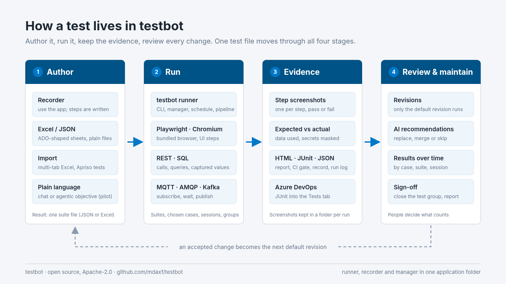
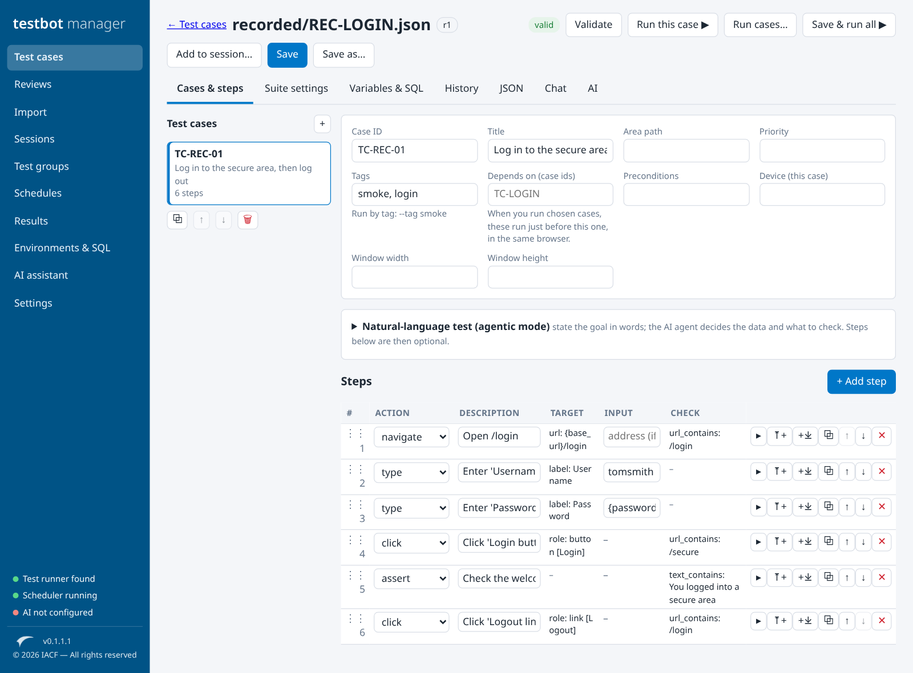
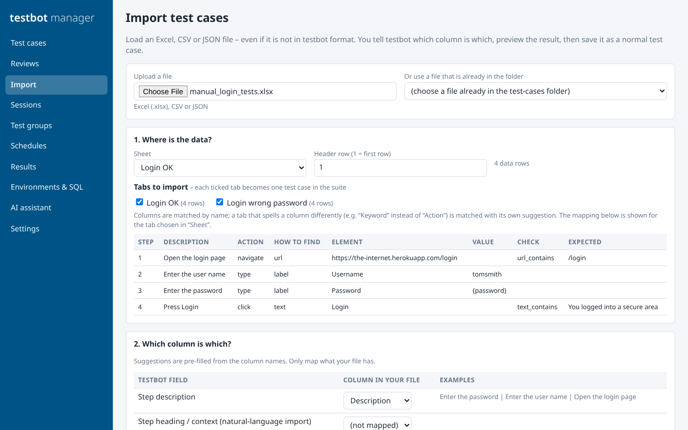
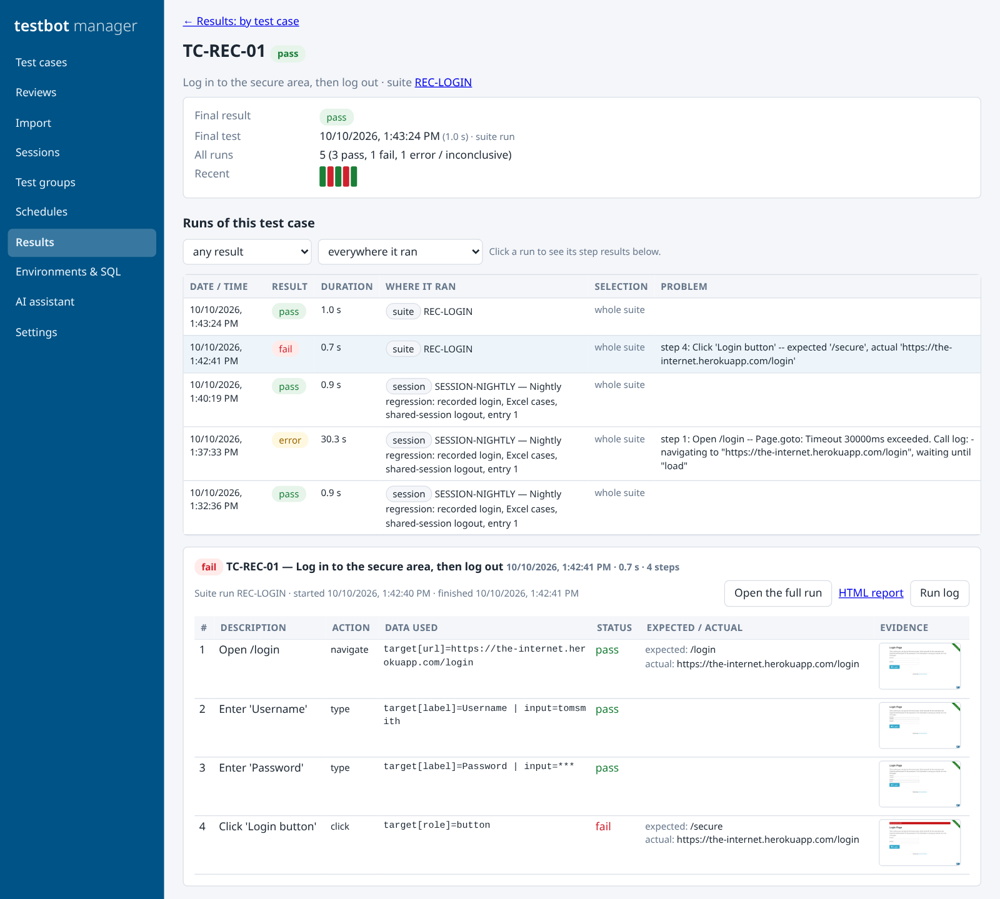
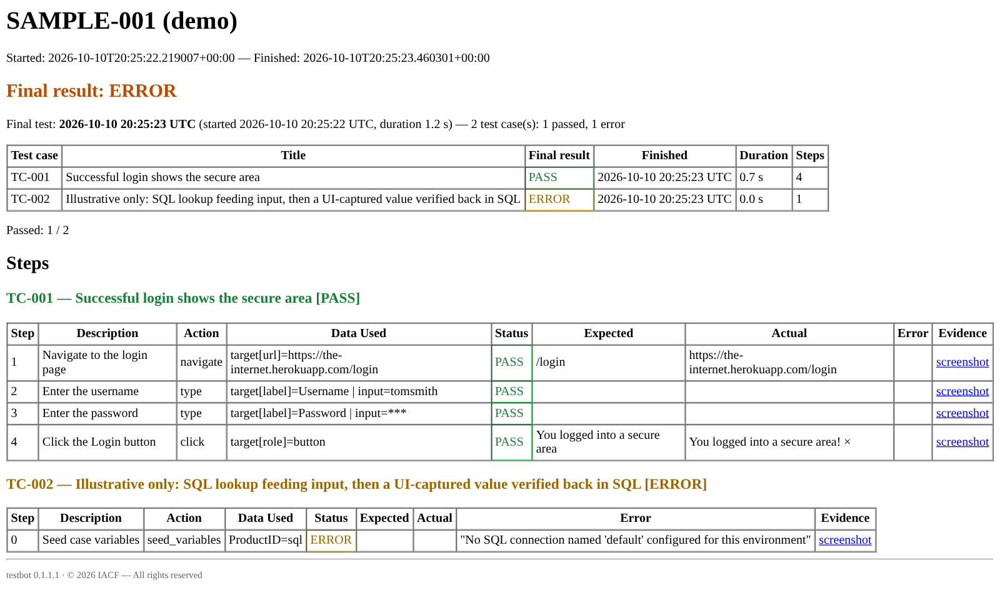
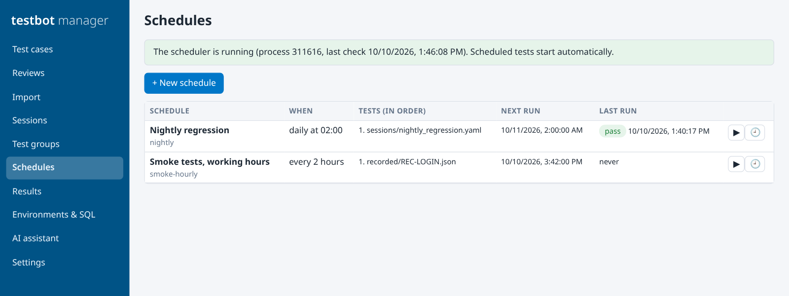
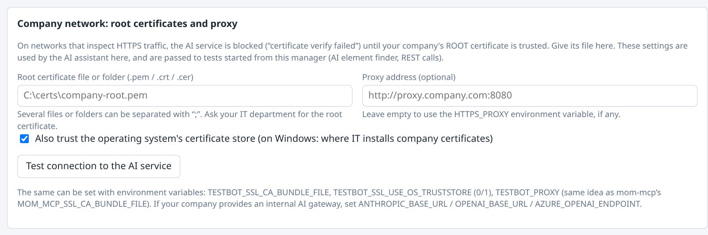

From first recording to signed-off release: the life of a test in Testbot
The October 5 article explained why a change is safe only when the whole process is retested. This one follows a single test through Testbot, from the first recording to a release someone can sign off: where the test comes from, what each run leaves behind, and how the test stays current once the application starts changing.

Mission and vision
Mission
Let the people who know a business process turn that knowledge into repeatable tests, and give everyone who approves a release evidence they can check.
Vision
Tests are written once, run on every change, and kept current as the application changes. AI proposes the updates. People approve them.
1. How a test is born
A test can start in four places. All four produce the same thing: a suite file (JSON or Excel) that the runner, the manager and the scheduler all read.
| Starting point | What you do | What you get |
|---|---|---|
| testbot recorder | Enter the start address and use the application. Clicks, typed values, selects and page changes appear as steps. | A JSON suite, an Excel workbook, or a plain Playwright script. Passwords are saved as a {password} variable, never as typed text. |
| Excel or JSON | Write the steps yourself. The Excel layout follows Azure DevOps test case fields: one sheet per case, shared data on a CommonData sheet. | Test data from SQL, generated values or constants, defined once and used by every case. |
| Import | Load an existing spreadsheet in any layout and map its columns. Each ticked tab becomes one test case. Apriso AutomaticTest scenarios are converted with an editable control map. | Test cases you already have, without retyping them. For Apriso scenarios, credentials in the source file are not copied. |
| Plain language | Describe the change in the editor's Chat tab, or write an objective and the expected outcome for the agentic mode. | A proposal shown as a step-by-step diff, which you apply, save as a draft or dismiss. Needs an AI provider key. The agentic mode is a pilot. |


The test we followed for this article
We recorded a log-in and log-out on a public practice site (the-internet.herokuapp.com) and ran it without editing anything. It failed at step 4, and it should have: the recorder stores the password as {password} with the placeholder CHANGE_ME, so the site refused the login. The report said what was expected (/secure), what actually happened (still on /login), and the step 4 screenshot showed the site's "Your password is invalid!" message. We filled in the value, added a check on the welcome message, and the run after the fix passed.
2. What every run leaves behind
Whether it is started from the command line, the manager, a schedule or a build pipeline, a run writes the same set of files. Nothing has to be collected by hand afterwards.
| Output | What is in it | Who uses it |
|---|---|---|
| Step screenshots | One per step, for passing and failing steps, in a new folder for each run so earlier evidence is never overwritten. | Tester, reviewer, auditor |
| HTML report | Final result first, then every step: description, action, data used, status, expected against actual, error and a link to the screenshot. Secrets show as ***. |
Anyone, with no tools installed |
| JUnit XML | The format Azure Pipelines' "Publish Test Results" task reads into the Azure DevOps Tests tab. | Build pipeline, release gate |
| Result JSON and run log | A machine-readable record of the run, in the same order as the test, plus one log line per step with level filters. | The manager, scripts, troubleshooting |
| Exit code | 0 when every case passed, 1 otherwise. |
Any CI system, as a gate |

/secure and stayed on /login. One earlier run ended in a page-load timeout, and it is recorded as an error, not as a failure.
3. Keeping the test alive
A test is worth most after the first release, when the application keeps changing. These are the parts that keep it running and keep it accurate.
Sessions and schedules
Put cases from several files in one ordered session, optionally in the same logged-in browser. Run it daily, weekly, at an interval or by hand, and get an email when it completes.
Revisions
Every saved change is a revision of the suite and the case. Only the default revision runs, and the run records which revision it used.
Recommendations
With an AI provider configured, a passing run can suggest better steps, and a target that moved gets a proposed fix. You replace, merge or skip. Nothing changes by itself.
Sign-off
A test group tracks a test effort such as UAT: final results, manual results, "run what has not passed", then close the cycle and export the report.

4. Ready for a company network
Test tools often stop at the company firewall. Testbot was built to run where the applications under test actually live.
| Concern | How Testbot handles it |
|---|---|
| Installation | One Windows application folder: testbot (runner), testbot-recorder and testbot-manager share one copy of Python, the libraries and Chromium. Nothing is downloaded at run time and nothing is unpacked to the temp folder at start-up. |
| HTTPS inspection | REST steps and AI calls trust the operating system's certificate store plus any company root certificates you name (.pem, .crt, .cer). A proxy can be set, or HTTPS_PROXY is used. The manager passes these settings to the runs it starts. |
| The manager | Listens on 127.0.0.1 only, needs a per-launch access token, and keeps every file path inside the workspace folders. |
| Secrets | API keys come from environment variables or a .env file and are never saved by the manager. Passwords are variables and are masked in reports and logs. |

What it does not do yet
- Chromium only, and test cases run one after another. Load tests use separate worker processes.
- Azure DevOps results go in through JUnit XML. Pulling test plans from Azure DevOps and pushing results through its REST API are not built.
- The packaged build is for Windows x64, and the executables are not code-signed.
- The recorder does not capture hover, drag or right-click, and elements inside iframes are recorded but not found by the runner as recorded.
- Message-bus steps are tested against a real MQTT broker; AMQP and Kafka are not yet.
- The agentic features are a pilot. Use them to propose and review; keep scripted tests as the record.
Try it
Testbot is open source under the Apache-2.0 licence. From source:
pip install -e . playwright install chromium python scripts/run_suite.py --suite test_cases/examples/sample_suite.json --env demo python scripts/manager.py
Code, user manual and examples: github.com/mdaxf/testbot
All screens in this article are from testbot 0.1.1.1, running the repository's own examples, a test recorded against a public practice site, and a two-tab spreadsheet made for the import example. Nothing was edited into the images.